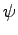

modes requires a CPU
time of the same order of that required by a self-consistent
calculation in the same system.
The computer time required for the self-consistent solution at fixed
ionic positions, Tscf
, is:
Tscf = Niter . Titer + Tinit
where
Niter = niter =
number of self-consistency
iterations, Titer =
CPU time for a single iteration,
Tsub =
initialization time for a single iteration.
Usually
Tinit < < Niter . Titer
.
The time required for a single self-consistency iteration
Titer
is:
Titer = Nk . Tdiag + Trho + Tscf
where Nk =
number of k-points, Tdiag =
CPU time per hamiltonian
iterative diagonalization, Trho =
CPU time for charge density
calculation, Tscf =
CPU time for Hartree and exchange-correlation
potential calculation.
The time for a Hamiltonian iterative diagonalization Tdiag
is:
Tdiag = Nh . Th + Torth + Tsub
where Nh =
number of H
products needed by iterative
diagonalization, Th =
CPU time per H
product, Torth =
CPU
time for orthonormalization, Tsub =
CPU time for subspace
diagonalization.
The time Th
required for a H
product is
Th = a1 . M . N + a2 . M . N1 . N2 . N3 . log(N1 . N2 . N3) + a3 . M . P . N.
The first term comes from the kinetic term and is usually much smaller
than the others.
The second and third terms come respectively from local and nonlocal
potential.
a1
, a2
, a3
are prefactors, M =
number of valence bands,
N =
number of plane waves (basis set dimension),
N1
, N2
, N3 =
dimensions of the FFT grid for wavefunctions
(
N1 . N2 . N3 8N
), P =
number of projectors for PPs
(summed on all atoms, on all values of the angular momentum l
, and
m = 1,..., 2l + 1
)
The time Torth
required by orthonormalization is
Torth = b1*Mx2*N
and the time Tsub
required by subspace diagonalization is
Tsub = b2*Mx3
where b1
and b2
are prefactors, Mx =
number of trial
wavefunctions (this will vary between M
and a few times M
,
depending on the algorithm).
The time Trho
for the calculation of charge density from
wavefunctions is
Trho = c1 . M . Nr1 . Nr2 . Nr3 . log(Nr1 . Nr2 . Nr3) + c2 . M . Nr1 . Nr2 . Nr3 + Tus
where c1
, c2
, c3
are prefactors,
Nr1
, Nr2
, Nr3 =
dimensions of the FFT grid for charge density
(
Nr1 . Nr2 . Nr3 8Ng
, where Ng =
number of
G-vectors for the charge density), and Tus =
CPU time required by
ultrasoft contribution (if any).
The time Tscf
for calculation of potential from charge density is
Tscf = d2 . Nr1 . Nr2 . Nr3 + d3 . Nr1 . Nr2 . Nr3 . log(Nr1 . Nr2 . Nr3)
where d1
, d2
are prefactors.


Next: 7.2 Memory requirements
Up: 7 Performance issues (PWscf)
Previous: 7 Performance issues (PWscf)
Contents
Paolo Giannozzi
2008-05-14